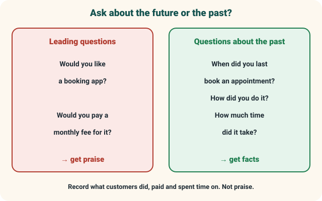

K1 · Listening and understanding › Level 4 Proficient
From idea to hypothesis: discover your customers
This lesson completes Sheet 1: Hypothesis sheet and interview script. Print template. If listening to understand is new to you, take Confirm instructions first.
1. Objectives
- Write 3 hypotheses about the customer, the problem and willingness to pay.
- Interview without leading: ask about what customers have done, not whether they like your idea.
2. Retrieval warm-up
This is the first lesson of the course. Think back to something you have done:
- The last time you bought something new to replace something old, what made you switch?
- The last time someone praised your idea, did they spend money or time on it?
Hints
- Usually a recurring problem that was annoying enough. That is exactly what you will look for in customers.
- Praise is easy to give. Money and time are harder to give. This lesson teaches you to tell the two apart.
3. Explanation
A business idea is a chain of guesses. The first job is to write those guesses down, so they can be tested.
Three hypotheses to write first:
Sheet 1. Three hypotheses
- CustomerWho, specific enough that you know where to find them.
- ProblemWhat they face, how often, how they handle it now.
- Willingness to payHow much money or effort they spend on the current way.
Template: "We believe [who] faces [problem] at least [how often], and currently spends [cost] on [current way]."
A good hypothesis must be able to fail. "Everyone needs healthy food" cannot fail, so it cannot be tested.
Interview to test the hypotheses. The aim is to hear facts about the past, not opinions about the future. Three rules:
- Ask about the last time. "When did this last happen to you? What did you do?"
- Do not present your solution yet. When you describe your idea, people usually praise it politely.
- Listen more than you talk. Ask "And then what?" instead of explaining.

Record evidence, not praise. Praise ("that's great") is not evidence. Evidence is what customers have done: looked for a solution themselves, paid money, spent time.
After 10 interviews, count. How many really have the problem? How many have already tried to deal with it? The result decides whether you keep, change or drop each hypothesis.
4. Workplace example
Hypothetical scenario. Hana grows vegetables in the highlands and wants to sell weekly boxes of clean vegetables to families in a big city.
At first she asks friends: "Would you buy clean vegetables delivered to your door?" Everyone says yes. She nearly orders 2,000 printed boxes.
She rewrites it as hypotheses. Customer: working mothers with young children, in one city district. Problem: each week they spend at least 2 hours shopping, and worry about pesticides. Willingness to pay: they already pay about 20% more at shops with certified vegetables.
She interviews 10 people from her child's school parents' group. She asks: "Where did you buy vegetables last week? How long did it take? Have you ever thrown vegetables away because you didn't trust them?"
Result: 7 buy at the supermarket when it is on their way, taking 20 minutes. Only 2 have ever ordered vegetables online. The "2 hours a week" hypothesis is wrong for most.
But 6 people say they have thrown vegetables away for fear of pesticides. She keeps the safety-worry hypothesis and changes the time hypothesis.
Why this works: she asks about what people have done, so she avoids 2,000 wasted boxes. She also finds a more real problem.
5. Practice
Hypothetical scenario. Ken wants to start a mobile motorbike repair service for office workers in a big city.
Write 3 hypotheses using Sheet 1. Write 4 non-leading interview questions.
Hint 1
A specific customer: which office workers, in which area, riding what? Problem: when is a breakdown most painful?
Hint 2
Each question should start with "The last time…", "At that point, what did you…", or "How much…".
Model answer
Hypotheses
- Customer: office workers in the towers of one business district, who ride scooters and park in the basement.
- Problem: at least twice a year, the scooter breaks down in the middle of a working day. They must take time off or push it a long way.
- Willingness to pay: they already lose half a day's work, plus repair costs and a taxi fare.
Questions
- When did your scooter last break down, and where?
- What did you do then? How long did it take?
- How much did it cost you, including getting around?
- Have you ever looked for an on-site repair service? How did you look?
(The details are hypothetical.)
6. Self-check
Choose an answer. Every option has an explanation.
Question 1. Which is a testable hypothesis?
-
Not quite. This can hardly be false, so it cannot be tested.
-
Correct. Correct. It has a specific customer, a problem and a frequency. Interviews can show whether it holds.
-
Not quite. This is a wish. It says nothing about customers or problems.
Question 2. Which interview question is least leading?
-
Not quite. It presents the solution and asks about the future. People tend to answer politely.
-
Correct. Correct. It asks about something that happened, without mentioning your solution.
-
Not quite. It suggests the answer, that it is inconvenient.
Question 3. After 10 interviews, 9 people say "great idea", but none has ever tried to solve the problem themselves. What do you conclude?
-
Not quite. Praise is not evidence. Nobody has acted to solve the problem.
-
Correct. Correct. People with a real problem have usually tried something, or paid for it.
-
Not quite. Close friends praise even more readily. Interview the right customer group.
Question 4. In an interview, when should you describe your solution?
-
Not quite. Describing it early makes people answer about your solution, not their real life.
-
Correct. Correct. Hear facts about the past first. Their reaction to your solution is secondary.
-
Not quite. You can describe it at the end. Just remember that their reaction is not strong evidence.
7. Reflection
- Which hypothesis in your idea have you never tested?
- Have you ever taken praise as evidence? What happened?
8. Real-world application
In the next 7 days, write Sheet 1 for your idea. Interview at least 5 people from the right customer group. Record what they have done, not their praise.
Level of evidence. Turning an idea into hypotheses and testing them has been studied in randomised trials with start-ups (see Lesson 2). The three interview rules are common practice in the start-up community. The site has found no peer-reviewed research testing each rule on its own.
9. Metadata
| skill | K1 · Listening and understanding |
|---|---|
| level | Level 4 · Proficient |
| group | N7 |
| framework_map | EntreComp: Spotting opportunities; Valuing ideas; WEF: Empathy and active listening; Analytical thinking; CSfW: 2a Communicate for work; SkillsFuture CCS: Customer Orientation (reference only) |
| original | Vietnamese version |
| updated | 2026-11-14 |
Finish the lesson
Mark it as done and the site suggests reviews after 1, 3 and 7 days. The data stays on your device only.
Suggested reviews: